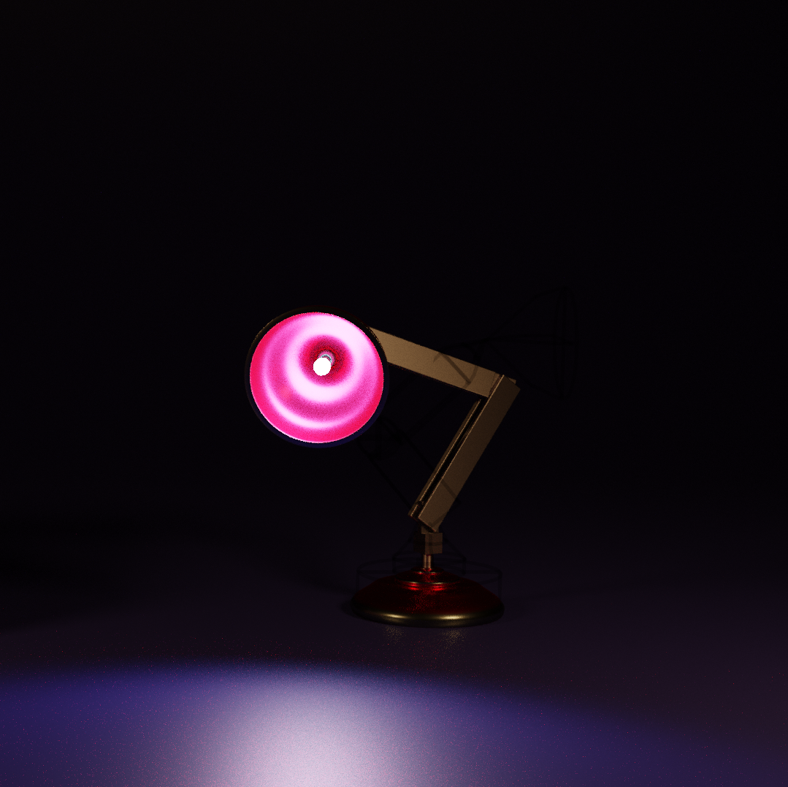

A Pixar Style Lamp
Modelling of the Lamp was done with primitive shapes. The arms, the hinge, and the bulb shape was done using cubes and spheres. The curvature of the Lamp Shade and the Lamp Base was done using two Bezier Curves each. One for the overall shape and one to handle the curvature of the Lamp Shade and the Base.
Texturing was done by selecting materials for each of the parts of the Lamp. The arms of the Lamp were given a high anisotropic value to reflect the brass properties. The Lamp Shade and the Base were given a lesser value of anisotropy. All the parts were given a bit of shine to reflect that they were a metal.
Rigging becomes tedious if we don't have a proper hierarchy of the bones in the armature. Each of the bone from the base is linked to the previous bone to the top, that is the Lamp Shade. There are two control bones with inverse kinematics to help ease the movement of the whole model for animation.
The Animation runs at 30 frames per second and the video is around 15 seconds long. Animation of the whole lamp was made easier with inverse kinematics as I had to take care of only 2 control bones rather that 7-8 individual bones.
Exploring Animation
I have watched a lot of movies with PIXAR and that is the inspiration foe this project.
This is one of my first animations. I thought this would be best to start with as it conveys an image with yet so simple mechanic.